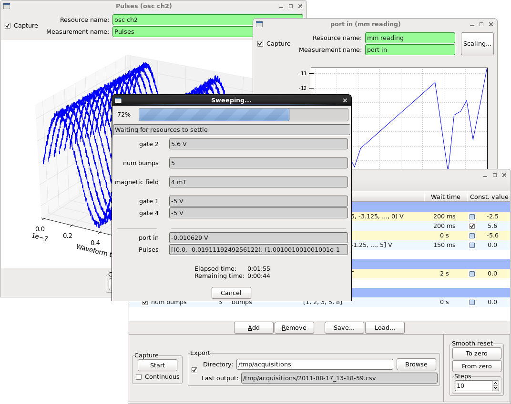

Acquisition¶
The Acquisition application allows the user to: set up multi-dimensional sweeps of resources on physical devices, acquire the resulting values, and run pulse programs.

The Acquisition application is composed of several interacting components:
- In the main window:
- Top: Variable configuration
- Bottom-left: Data capture
- Bottom-right: Smooth reset
- Accessible through the menus:
- Configuration -> Devices...: Device configuration
- Configuration -> Measurements: Measurement configuration
- Configuration -> Pulse program...: Pulse program configuration